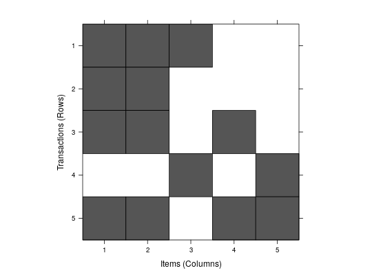

The transactions class represents transaction data used for
mining itemsets or rules. It is a direct extension of class
itemMatrix to store a binary incidence
matrix, item labels, and optionally transaction IDs and user IDs.
Objects are created by coercion from objects of other classes
(see Examples section) or by
calls of the form new("transactions", ...).
itemsetInfo:itemMatrix, but
should be accessed in transactions with the
method transactionInfo().data:ngCMatrix to store the
binary incidence matrix (see
itemMatrix class)itemInfo:itemMatrix class)Class itemMatrix, directly.
Transactions can be created by coercion from lists containing transactions, but also from matrix and data.frames. However, you will need to prepare your data first. Association rule mining can only use items and does not work with continuous variables.
For example, an item describing a person (i.e., the considered object called a transaction) could be tall. The fact that the person is tall would be encoded in the transaction containing the item tall. This is typically encoded in a transaction-by-items matrix by a TRUE value. This is why as.transaction can deal with logical columns, because it assumes the column stands for an item. The function also can convert columns with nominal values (i.e., factors) into a series of binary items (one for each level). So if you have nominal variables then you need to make sure they are factors (and not characters or numbers) using something like
data[,"a_nominal_var"] <- factor(data[,"a_nominal_var"]).
Continuous variables need to be discretized first. An item resulting from discretization might be age>18 and the column contains only TRUE or FALSE. Alternatively it can be a factor with levels age<=18, 50=>age>18 and age>50. These will be automatically converted into 3 items, one for each level. Have a look at the function discretize for automatic discretization.
Complete examples for how to prepare data can be found in the man pages for Income and
Adult.
Transactions are represented as sparse binary matrices of class
itemMatrix. If you work with several transaction sets at the
same time, then the encoding (order of the items in the binary matrix) in the different sets is important.
See itemCoding to learn how to encode and recode transaction sets.
signature(from = "matrix", to = "transactions");
produces a transactions data set from a binary incidence matrix.
The column names are used as item labels and the row names are
stores as transaction IDs.signature(from = "transactions", to = "matrix");
coerces the transactions data set into a binary incidence matrix.
signature(from = "list", to = "transactions");
produces a transactions data set from a list. The names of the
items in the list are used as item labels.
signature(from = "transactions", to = "list");
coerces the transactions data set into a list of transactions.
Each transaction is a vector of character strings (names of the
contained items).
signature(from = "data.frame", to = "transactions");
recodes the data frame containing only categorical variables (factors)
or logicals all into a binary transaction data set. For binary variables
only TRUE values are converted into items and the item label is the
variable name. For factors, a dummy item for each level is
automatically generated. Item labels are generated by concatenating
variable names and levels with "=".
The original variable names and levels are stored in the itemInfo
data frame
as the components variables and levels.
Note that NAs are ignored (i.e., do not generate an item).signature(from = "transactions", to = "data.frame");
represents the set of transactions in a printable form
as a data.frame.
Note that this does not reverse coercion from data.frame
to transactions.signature(from = "ngCMatrix", to = "transactions");
Note that the data is stored transposed in the ngCMatrix. Items are
stored as rows and transactions are columns!signature(x = "transactions");
returns row (transactionID) and column (item) names.signature(x = "transactions");
returns the labels for the itemsets in each transaction
(see itemMatrix).signature(x = "transactions");
replaces the transaction information with a new data.frame.signature(x = "transactions");
returns the transaction information as a data.frame.signature(object = "transactions")signature(object = "transactions")[-methods,
discretize,
LIST,
write,
c,
image,
inspect,
itemCoding,
read.transactions,
random.transactions,
sets,
itemMatrix-class
## example 1: creating transactions form a list a_list <- list( c("a","b","c"), c("a","b"), c("a","b","d"), c("c","e"), c("a","b","d","e") ) ## set transaction names names(a_list) <- paste("Tr",c(1:5), sep = "") a_list#> $Tr1 #> [1] "a" "b" "c" #> #> $Tr2 #> [1] "a" "b" #> #> $Tr3 #> [1] "a" "b" "d" #> #> $Tr4 #> [1] "c" "e" #> #> $Tr5 #> [1] "a" "b" "d" "e" #>## coerce into transactions trans1 <- as(a_list, "transactions") ## analyze transactions summary(trans1)#> transactions as itemMatrix in sparse format with #> 5 rows (elements/itemsets/transactions) and #> 5 columns (items) and a density of 0.56 #> #> most frequent items: #> a b c d e (Other) #> 4 4 2 2 2 0 #> #> element (itemset/transaction) length distribution: #> sizes #> 2 3 4 #> 2 2 1 #> #> Min. 1st Qu. Median Mean 3rd Qu. Max. #> 2.0 2.0 3.0 2.8 3.0 4.0 #> #> includes extended item information - examples: #> labels #> 1 a #> 2 b #> 3 c #> #> includes extended transaction information - examples: #> transactionID #> 1 Tr1 #> 2 Tr2 #> 3 Tr3image(trans1)## example 2: creating transactions from a matrix a_matrix <- matrix(c( 1,1,1,0,0, 1,1,0,0,0, 1,1,0,1,0, 0,0,1,0,1, 1,1,0,1,1 ), ncol = 5) ## set dim names dimnames(a_matrix) <- list(c("a","b","c","d","e"), paste("Tr",c(1:5), sep = "")) a_matrix#> Tr1 Tr2 Tr3 Tr4 Tr5 #> a 1 1 1 0 1 #> b 1 1 1 0 1 #> c 1 0 0 1 0 #> d 0 0 1 0 1 #> e 0 0 0 1 1## coerce trans2 <- as(a_matrix, "transactions") trans2#> transactions in sparse format with #> 5 transactions (rows) and #> 5 items (columns)inspect(trans2)#> items transactionID #> [1] {Tr1,Tr2,Tr3,Tr5} a #> [2] {Tr1,Tr2,Tr3,Tr5} b #> [3] {Tr1,Tr4} c #> [4] {Tr3,Tr5} d #> [5] {Tr4,Tr5} e## example 3: creating transactions from data.frame a_df <- data.frame( age = as.factor(c(6, 8, NA, 9, 16)), grade = as.factor(c("A", "C", "F", NA, "C")), pass = c(TRUE, TRUE, FALSE, TRUE, TRUE)) ## note: factors are translated differently to logicals and NAs are ignored a_df#> age grade pass #> 1 6 A TRUE #> 2 8 C TRUE #> 3 <NA> F FALSE #> 4 9 <NA> TRUE #> 5 16 C TRUE#> items transactionID #> [1] {age=6,grade=A,pass} 1 #> [2] {age=8,grade=C,pass} 2 #> [3] {grade=F} 3 #> [4] {age=9,pass} 4 #> [5] {age=16,grade=C,pass} 5as(trans3, "data.frame")#> items transactionID #> 1 {age=6,grade=A,pass} 1 #> 2 {age=8,grade=C,pass} 2 #> 3 {grade=F} 3 #> 4 {age=9,pass} 4 #> 5 {age=16,grade=C,pass} 5## example 4: creating transactions from a data.frame with ## transaction IDs and items a_df3 <- data.frame( TID = c(1,1,2,2,2,3), item=c("a","b","a","b","c", "b") ) a_df3#> TID item #> 1 1 a #> 2 1 b #> 3 2 a #> 4 2 b #> 5 2 c #> 6 3 btrans4 <- as(split(a_df3[,"item"], a_df3[,"TID"]), "transactions") trans4#> transactions in sparse format with #> 3 transactions (rows) and #> 3 items (columns)inspect(trans4)#> items transactionID #> [1] {a,b} 1 #> [2] {a,b,c} 2 #> [3] {b} 3